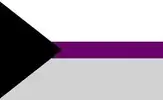
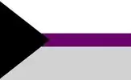
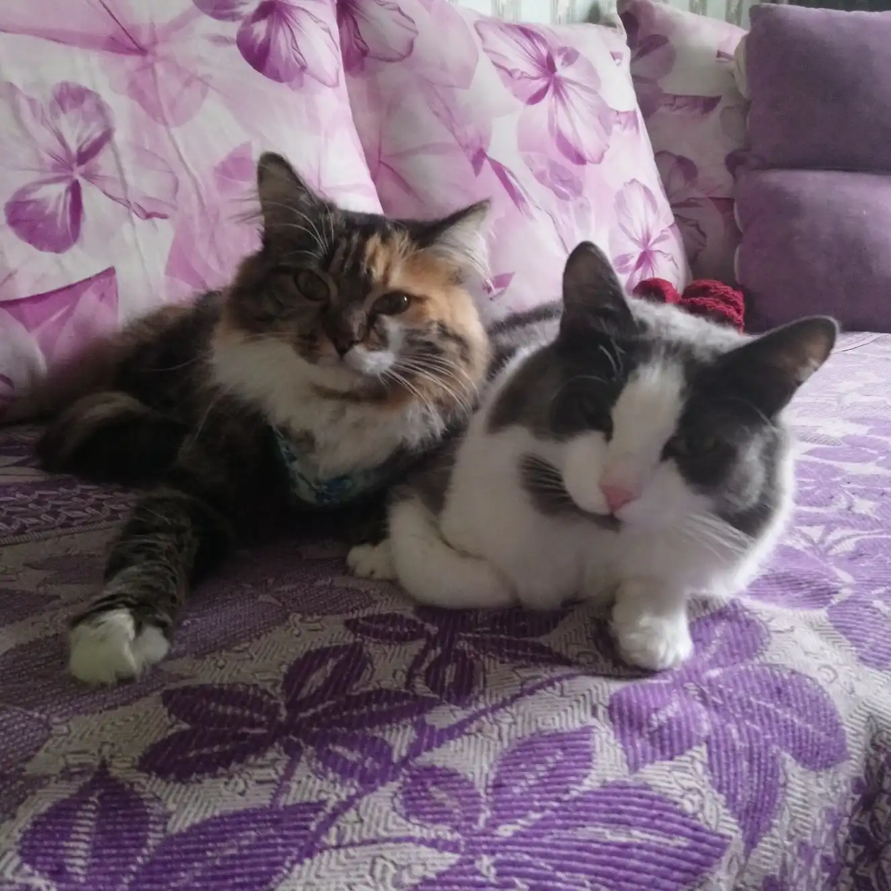

About me and this website!
 4-minute read
4-minute read
 September 5, 2024
September 5, 2024
 October 19, 2024
October 19, 2024
Poesu is short for 'the poet of the sun'. I came up with this pseudonym because I used to write poetry.
But you can call me El, Merlyn, or Merle (they/he), I'm a 20-something artist, anarchist, and atheist.
There're so many things I'm interested in that occasionally I feel torn apart between all of them. Doesn't help that I'm such an autie snail, you know? I don't have the spoons to draw more frequently.
I'm 

 and . All my creative works are inherently queer, my queerness and art are inseparable. The fact that I'm disabled and neurodivergent also plays a huge factor in my life and art. My disabilities include autism, anxiety disorder, and cPTSD.
and . All my creative works are inherently queer, my queerness and art are inseparable. The fact that I'm disabled and neurodivergent also plays a huge factor in my life and art. My disabilities include autism, anxiety disorder, and cPTSD.
My biggest passion is drawing. I like all kinds of mediums, and if I could, I'd practise them all: Watercolour, ink, pastels, oil, gouache. Each is fascinating in their own way. I've also begun finger sketching on my phone recently.
Art aside, my ways to relax are either cycling for dozens of kilometers on a bicycle or sitting on the riverbank for hours, dipping my feet in the water. Nature is easy to connect to and communicate with.
I adore cycling, it's my special interest. Riding a bicycle feels liberating — I could go anywhere I want, escape from everything I did not want. It's my safe space.
I guess I could call HTML my special interest as well, it just sucks me in and I can't help it. Probably its magic is what it also gives you freedom to do whatever you want, construct your home brick by brick.
The little problem is (or was) that I love to draw, but I'm not fond of socializing.
So here comes your generic IndieWeb/SmallWeb newbie part. For a long time I've sticked to social media to no avail. It always was a chase after followers and likes, and these numbers pushed any meaningful ideas out. I never liked to promote myself.
My first introduction to the IndieWeb was autism-related blogs in 2021. At the time I didn't discover I'm autistic yet, but the more I read from autistic people, the more I recognized myself in those stories. I loved how nuanced and personal the blogs were. It's as if the space you write for shapes the way you talk about your experience. Social media posts are the same shallow things regurgitated over and over again, but every personal website you stumble across is novel. Blogs provide an opportunity to dive deep into something and learn new stuff.
I got inspired by all those enthusiastic folks doing what they love. It finally occured to me that showing off my art doesn't have to bring misery, and that's in fact my way of doing it with pleasure — by building my own website.
The website is completely static and kinda 'handmade' — I'm manually building it from scratch with pure HTML and CSS, because for me it's a bit frustrating to navigate website builders, they are harder to grasp in some way and I feel too restricted. Though It's fun to learn new things.
There are rules I want to set for this space. Kick me in the butt if any of these ever happen:
- No bullshit such as (but not limited to) tracking, analytics, ads, pop-ups, deceptive design, paywalls, and loginwalls.
- No excessive JavaScript (at this moment I don't have any scripts except for guestbook and comments).
- No likes, reactions, and views. They make me way too self-aware of the things I publish.
- No self-censorship. I put whatever I want here.
- Performance, accessibility, and backwards compatibility are top priorities.
- Don't strive to look 'professional', whatever that means.
But ultimately it's important not how the website is done, but what it allows me to share my artwork. It may (or honestly is) poorly coded, but it's what I'm doing with my own hands, and I value that.
You can find my artistic principles in my art manifesto!
Generally I'll post my art here first and sometimes maybe some long ass posts ('cuz writing is awesome). I'll go back to old posts and update them if needed, it's a permanent work in progress (looking at you, digital gardens). Please feel free to reach out by Mastodon, Bluesky, Matrix, Signal, or email, I'm open to feedback or maybe you just wanna chit-chat, I'm here for ya! For technical stuff, here's a Github where you are welcome to open issues and make suggestions, I'm no web developer after all. And I love to collaborate and work in a team, so I'm eager to hear about your creative projects.
As a thanks for hearing me out, here are my two little rascals c:


Inspired by aboutideasnow.
↞ Back to Home